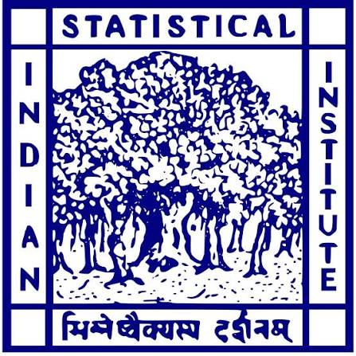

Education
Indian Statistical Institute, Bangalore
PhD in Quality, Reliability and Operations Research (Ongoing)
• Thesis Submitted
• Advisor: Dr. Gijo E. V.
• Degree conferred by Indian Statistical Institute, Kolkata
Present

Indian Statistical Institute, Bangalore
MS in Quality Management Science
• Master's Thesis Advisor: Dr. B. S. Daya Sagar
• Degree conferred by Indian Statistical Institute, Kolkata
2019
Presidency University, Kolkata
BSc. in Statistics (Hons.)
2017